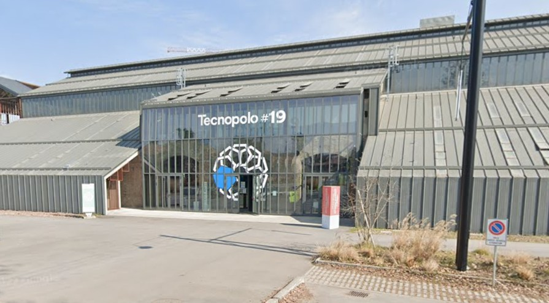
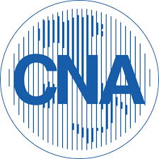

CONFINDUSTRIA - Mi presento
Ore svolte in totale: 2
Il progetto è servito a insegnarci due cose fondamentali: ci hanno spiegato come compilare correttamente un Curriculum Vitae e come comportarsi ad un colloquio di lavoro. Sapevo già qualcosa, ma con questo progetto ho ricevuto dei chiarimenti su alcune cose di cui avevo ancora dubbi, e ne ho invece imparate molte altre.
CNA
Ore svolte in totale: 4
Ci siamo recati al tecnopolo per ascoltare ed essere introdotti nella realtà aziendale territoriale. Nel corso delle 4 ore dell'incontro ho imparato molte cose che non sapevo riguardo al mondo del lavoro e delle aziende, esse mi sono state spiegate direttamente da fondatori e lavoratori delle aziende, che sono stati intervistati davanti a noi.


Polarity
Ore svolte in totale: 2
ci siamo ritrovati nell'aula magna della scuola ad ascoltare i due fondatori di polarity che ci spiegavano la programmazione web e back end, ma anche la loro realtà lavorativa. Da questo incontro ho imparato come funzionano davvero i siti e le applicazioni e soprattutto quanto possa essere complicato programmarle.
Ascolto project work
Ore svolte in totale: 3
In queste 3 ore abbiamo ascoltato il project work dei ragazzi di quinta. tramite questa attività ho acquisito competenze digitali e informatiche più alte